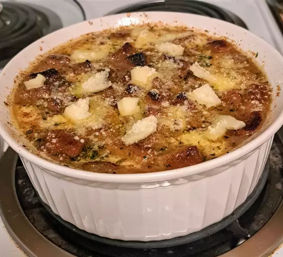

Home
French Onion Soup

Description
French onion soup, or soupe à l'oignon gratinée, is a classic French dish made with caramelized onions and beef stock or broth.
The soup is topped with bread and cheese, then gratinéed to rich, gooey perfection. It's traditionally served in a ramekin or a ceramic crock with a handle.
Ingredients (2 Ppl.)
- 1 cup unsalted butter
- 4 tablespoons olive oil
- 8 cups sliced onions
- 10 cups beef broth
- 4 tablespoons dry sherry
- 2 teaspoons dried thyme
- 2 pinches salt and pepper to taste
- 8 slices French bread
- 8 slices provolone cheese
- 4 slices Swiss cheese, diced
- ½ cup grated Parmesan cheese
Steps
- Gather all ingredients.
- Melt butter with olive oil in an 8-quart stock pot over medium heat. Add onions to butter and continually stir until tender and translucent. Do not brown the onions.
- Add beef broth, sherry, and thyme. Season with salt and pepper. Let simmer for 30 minutes. Meanwhile, preheat the oven's broiler.
- Ladle soup into oven-safe serving bowls and place one slice of bread on top of each (bread may be broken into pieces if you prefer). Layer each slice of bread with a slice of provolone, 1/2 slice diced Swiss and 1 tablespoon Parmesan cheese.
- Place bowls on a cookie sheet and broil in the preheated oven until cheese bubbles and browns slightly, 2 to 3 minutes.
- Serve hot and enjoy!